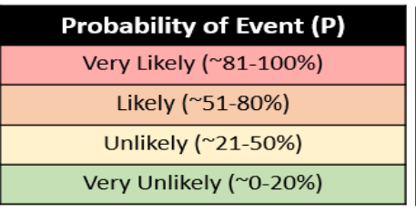
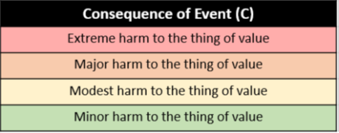
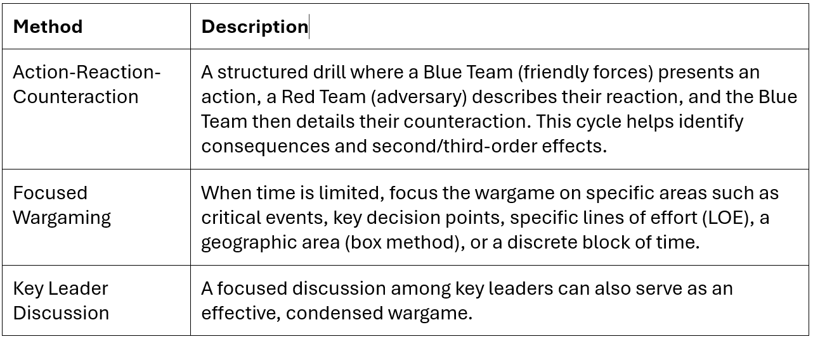
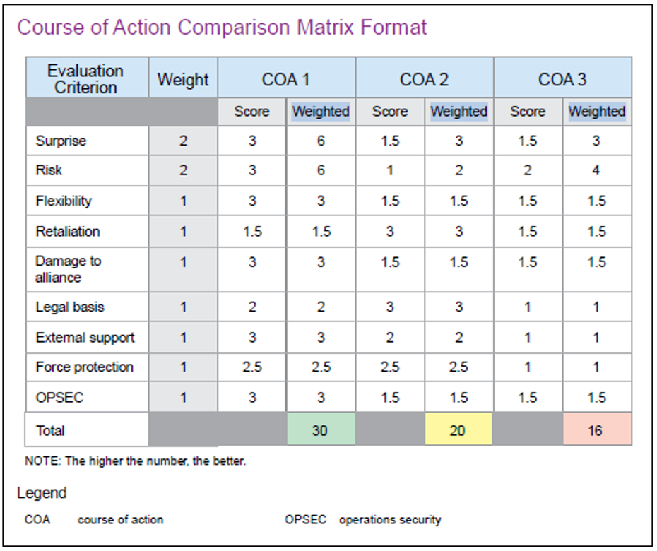
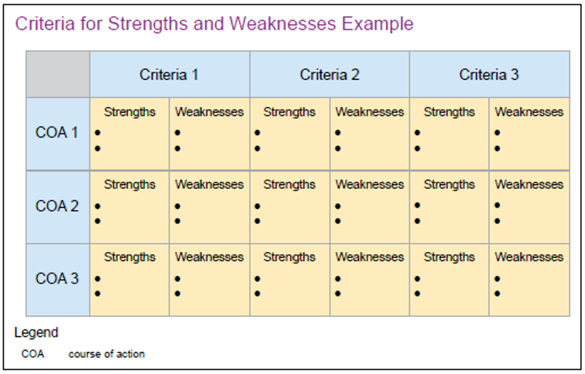
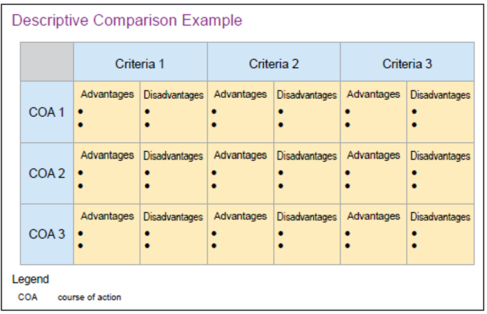
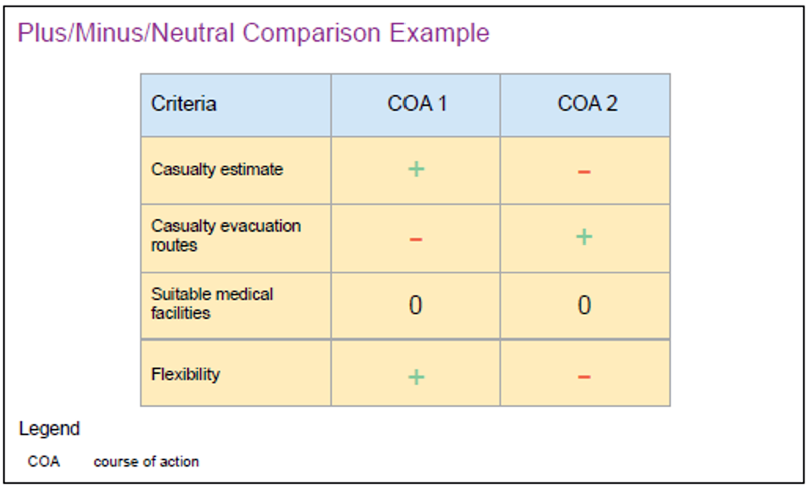

Saving Your Work
Read this page before you begin. Progress is stored in Canvas, and a personal backup file is created when you use Save & Exit.
Do
- Keep only one Canvas window or tab open for this assignment.
- Click Save (bottom right) while you work.
- Confirm the top bar says Canvas save OK.
- When leaving, click Save & Exit (top right, dark blue header).
Save & Exit saves to Canvas and downloads your backup file
(AFPP-backup-….json to your Downloads folder.
Don’t
- Don’t open multiple Canvas windows or tabs for this assignment.
- Don’t switch between browsers (for example Edge and Chrome) or computers mid-work.
- Don’t close the browser or leave Canvas without using Save & Exit.
If your progress resets
- Re-open this assignment in Canvas with the same student account.
- In the top-right dark blue header, click Restore Backup (next to Save & Exit).
- Choose your
.jsonbackup file and confirm. - Click Save (bottom right) until the top bar says Canvas save OK.
- Click Save & Exit before leaving to download a fresh backup.
Backups only work for the Canvas account that downloaded them. Another student’s file cannot be restored on your account.
Introduction
This section contains a required Canvas submission that is separate from this workbook.
Purpose
The purpose of this assignment is to guide the student through solving a complex organizational problem using the applicable steps of the Air Force Planning Process (AFPP). In other words, translate the AFPP into a universal problem-solving framework. While grounded in AFDP 5-0, Planning, this workbook is written so that the process can be applied to organizational, leadership, or operational problem-solving, emphasizing structured thinking and decision-making.
In the following pages, you will find the rubric, the guidance given to students in the workbook, two graded examples—one outstanding and one with some errors. In addition, there is a list of common mistakes and some guidance on coaching students to better results in applicable sections of the workbook.
Submission
Write and submit your Problem Statement in Canvas under the separate assignment:
AFPP Workbook Assignment #1 – Problem Statement
Your Flight Commander must approve/verify it there. This workbook does not collect the Problem Statement text.
AFPP Step 1: Planning Initiation
(AFPP: “Understand the environment and frame the problem.”)
The planning process begins when leaders at any level initiate action, typically in response to guidance from senior leadership or a recognized need. While planning is often led by the unit's leadership and their key staff, any member of the organization can be assigned to the planning team. Direction from above provides the initial framework, including the overall intent and specific instructions. This guidance, combined with an iterative design process, ensures the team fully understands the problem before developing a course of action.
Your Task
Problem framing, gather tools, and review planning guidance.
Guidance
This is where you will select a problem to utilize the AFPP on. The problem can be from the provided list or a real-world problem/process you would like to apply the AFPP to. If you choose your own problem, your Flight Commander must approve before moving forward on this workbook.
1. Conduct an Initial assessment (The first look)
- Define the problem: What matters most (priorities); what success should achieve; any boundaries (time, resources, authority).
- How much time do you have to solve this?
- What level of effort is realistic?
2. Gather tools
In simple terms, this step is about collecting and reviewing all existing information before you start making a new plan. It's the preparation phase where you get organized.
- Get Your Playbooks: Find all standard operating procedures and best-practice guides.
- Gather Project Files: Collect the official assignment, goals, budget, and timeline for this specific task.
- Collect Intel: Find relevant reports, data, and feedback from past projects or other teams.
- Know Your Team's Habits: Review your team’s unwritten rules and established routines.
Tip: Don’t overcomplicate—this phase is about getting oriented, not being perfect.
AFPP Step 2: Mission Analysis
(AFPP: Understand the problem deeply before solving it.)
Mission analysis is a critical process that allows commanders and their staff to develop a thorough understanding of the problem, the overall mission, and the current situation. It involves identifying all specified, implied, and essential tasks, along with any limitations on their actions. This comprehensive analysis helps frame the problem and leads to the development of a viable approach to achieve the desired end state in support of higher headquarters.
Your Task
Develop a thorough understanding of your chosen problem: determine facts, threats to solving the problem, identify assumptions, determine constraints/restraints, COGs and critical factors, identify tasks, develop a risk assessment, success criteria, root causes, develop a commander’s intent statement, present a commander’s MA brief.
1. Determine Facts A fact is a statement of information known to be true and relevant to planning. A fact defines the scope of the problem. If a fact is invalidated, it should result in a new or modified plan.
List out facts that deal directly with your problem, consider the below questions when determine your facts:
- What's definitely true here?
- How does this define the problem's scope?
- If this fact changes, what's my backup plan?
- Am I sure this is a fact?
- Who are my reliable sources?
- Are there rules or laws to follow?
- What external forces are at play?
- What information do I still need?
2. Develop Assumptions Assumptions are logical, realistic beliefs about current or future situations, crucial for planning where facts are absent, but must be continually reviewed and validated to identify risks. When an assumption proves invalid and significantly impacts the plan, it should lead to substantial changes and inform branches or sequels, rather than “assuming away” potential problems.
Your Task: Identify assumptions that must be made with your problem set.
When identifying assumptions, consider the Five A’s:
- Awareness: Expected warning or notification.
- Assets: Available types and numbers (e.g., airlift, allied forces).
- Access: Basing rights, overflight, and staging capabilities.
- Additional/Other Activity: Involvement from bordering or third-party nations.
- Authorities: Commander-specific powers and relationships.
3. Analyze most likely and most dangerous threat to mission success In AFPP, Airmen should consider the most likely and most dangerous threat that could prevent mission success and reaching the desired system. The threats should relate to the identified problem requiring action to move the observed system to the desired system. Airmen should consider the most likely and most dangerous threat to mission success during tabletop exercises in COA analysis and wargaming. Joint staffs at the operational level may focus on the most likely and most dangerous adversary COAs.
Your Task: Use critical thinking to answer the below questions:
- What is the most likely problem I will face? (The thing that will probably happen).
- What is the most dangerous problem I could face? (The worst-case scenario, even if it's not likely).
4. Determine constraints and restraints Determine Operational Limitations (Constraints and Restraints). Constraints and restraints are actions required or prohibited by higher authority that limit the commander’s freedom of action. Additionally, a constraint and/or restraint can be a restriction imposed by conditions and circumstances. Restraints are HHQ requirements placed on the command that prohibit action. An example of a restraint is a prohibition from conducting a movement to a specific location (e.g., a bordering nation). Constraints are HHQ requirements placed on the command that dictates action.
Your Task: Using your tools gathered in step 1 (i.e. AFIs, regulations, OIs etc) take time to identify any restraints and constraints you will have with your problem that may effect your COAs.
- A Restraint is a “DON'T” rule. It prohibits you from doing something. Example: “Whatever you do, don't contact the client directly.”
- A Constraint is a “MUST DO” rule. It requires you to do something. Example: “You must finish this report by Friday.”
5. Analyze friendly/adversary COGs and critical factors A COG is the “source of power that provides moral or physical strength, freedom of action, or a will to act.” COG analysis should reveal what is critical and relate what is critical to what is vulnerable. Critical vulnerabilities may be attacked, exploited, or protected to decisively affect the enemy and enable friendly action. Analysis of a COG’s critical factors generally yields decision points, which are key terrain, key events, critical factors, or functions that, when acted upon, enable a commander to gain a marked advantage over an enemy. A COG analysis may reveal vulnerabilities for countering an enemy kill chain.
Your Task: Analyze your problem and identify some potential COGs that will need to be considered during your planning process.
Guidance: Types of COGs
- Critical capabilities (CCs): those means that are considered crucial enablers for a COG to function as such (and are essential to the accomplishment of the specified or implied objectives).
- Critical requirements (CRs): essential conditions, resources, or means for a CC to be fully operational.
- Critical vulnerabilities (CVs), or components thereof, are deficient or vulnerable to attack (or other effects) that create decisive or significant effects on the COG.
Example: The Center of Gravity for a Level 1 Trauma Center is its Specialized Surgical and Intensive Care Capacity, which ensures it can handle the most critical life-saving missions.
| COG Type | Description | Example |
|---|---|---|
| Critical Capability (CC) | The essential functions of the hospital. | 24/7 emergency surgical intervention and advanced life support. |
| Critical Requirement (CR) | Essential inputs for the CCs. | Board-certified trauma surgeons, specialized medical equipment (ventilators, MRI), and a reliable power grid. |
| Critical Vulnerability (CV) | Vulnerable components of the requirements. | Backup generator failure during a natural disaster or a shortage of specialized medical supplies (e.g., blood products). |
6. Identify Specified, Implied, and Essential Tasks Identify Specified, Implied, and Essential Tasks. Specified tasks are assigned to the commander verbally or in writing by the HHQ. Specified tasks often become essential tasks. Implied tasks are tasks that are revealed by mission analysis but not explicitly stated by HHQ guidance. Implied tasks may NOT be essential to mission accomplishment but should be identified to inform further planning. Determining the essential tasks from the specified and implied tasks ensures planners can develop an accurate mission statement and approach.
Your Task: Unique to your selected problem, identify the Specified, Implied, and Essential tasks you will have to do in order for mission success.
Guidance
- Specified Tasks (Direct Orders): Example: “Deliver 5,000 lbs medical supplies and 10,000 lbs MREs to Drop Zone Phoenix by 0600Z” and “Avoid civilian casualties.”
- Implied Tasks (Things You Figure Out): Example: “Coordinate flight path with aircrew,” “Check weather forecasts,” and “Secure C-17 aircraft and loadmasters.”
- Essential Tasks (Must-Do's for Success): Example: “Loading correct aid onto aircraft” and “Successfully dropping aid over Phoenix without incident.”
7. Identify Root Causes (Not Symptoms) Root cause: The fundamental underlying reason or factor that is driving the problem, essentially the most critical aspect that needs to be addressed to solve the issue. Teams discuss lines of effort (subordinate problem sets) to address the root cause utilizing the “5 Why Analysis” method by asking “Why” as many times as needed (minimum 5) to identify the root cause of the initial problem statement.
Your Task: Find the root cause to your problem asking “why” at least 3 to 5 times.
- Ask “why?” repeatedly (at least 3–5 layers deep)
- Look for:
-
- Process issues
- Leadership issues
- Resource mismatches
- Cultural factors
(AFDP Translation: You are identifying the true problem to solve, not just surface-level effects.)
8. Develop Risk Assessment Develop Commander’s Risk Assessment. A risk assessment should be conducted at all levels of command. There are two categories of military risk: risk-to-force (RF) and risk-to-mission (RM). RF is the probability and consequence of current and contingency events causing harm to the provisioning and sustainment of sufficient military resources. RM is the probability and consequence of current and contingency events causing harm to current or future military objectives.
Your Task: Following the Joint Risk Analysis Methodology (JRAM) create a Risk Assessment Plan for your problem.
Objective: Identify the biggest threats to success and create a clear plan to handle them.
Instructions: Complete the following four pillars for your specific problem.
Pillar 1: Problem Framing (What's at Stake?)
Before you can manage risk, you must be crystal clear about what you're trying to protect.
- What is your main goal? (What does success look like?)
- “Risk to what?” What is the most important thing that could be harmed if you fail?
- Context: time (short-term vs long-term) and connections (how others affect the problem / how the problem affects others).
Pillar 2: Risk Assessment (What Could Go Wrong and Why?)
Identify the specific “harmful events” that could threaten your goal.
1. List Potential Harmful Events
Brainstorm at least 3 specific bad things that could happen.
2. Analyze Each Harmful Event
For each event you listed, break it down:
- Source: Who or what could cause this harm? (e.g., another person, a technical issue, a scheduling conflict, a simple mistake).
- Probability: How likely is this event to happen? (Very Unlikely, Unlikely, Likely, Very Likely)
- Consequence: If it happens, how bad will the consequences be? (Minor harm, Modest harm, Major harm, Extreme harm)


Example:
| Harmful Event | Source of Risk | Probability | Consequence |
|---|---|---|---|
| Example: I miss my project deadline. | My own poor time management. | Likely | Major harm |
Your response: Complete at least one row. Additional rows are optional.
| Harmful Event | Source of Risk | Probability | Consequence |
|---|---|---|---|
Pillar 3: Judge the Risk (Is This Acceptable?)
Now, characterize the overall risk level for your top threats.
1. Plot Your Risks
Using your answers from Step 2, place your top 1–3 risks on the chart below.
- A Very Likely / Extreme Consequence event is a HIGH risk.
- A Very Unlikely / Minor Consequence event is a LOW risk.
(Chart will be added later.)
2. Evaluate
Look at where your risks landed. Are they in the Low, Moderate, Significant, or High zones?
- Unacceptable Risk: Any risk in the “Significant” or “High” zone needs a plan.
- Acceptable Risk: Risks in the “Low” zone might not need a special plan.
Your response: Complete at least one row. Additional rows are optional.
| Event | Probability | Consequence | Initial Risk Assessment |
|---|---|---|---|

Pillar 4: Manage the Risk (What Are You Going to Do?)
For each “Unacceptable” risk you identified, choose a specific management strategy. You can't choose “do nothing.”
- (1) Accept. Make an informed decision to act without conducting risk mitigation efforts.
- (2) Avoid. Forgo the activity that would produce unacceptable risk or remove the item of value that could be damaged due to unacceptable risk.
- (3) Mitigate. Implement measures that decrease the probability or consequence of harm across time horizons.
- (4) Transfer. Take action to change when and where the risk is incurred and potentially who or what incurs it.
| Unacceptable Risk | My Management Plan (Choose one: Avoid, Mitigate, Transfer) | My Specific Action |
|---|---|---|
| Example: Missing deadline due to poor time management. | Mitigate | I will create a detailed daily schedule and set calendar reminders for each sub-task. |
| Example: My computer might crash. | Mitigate | I will back up all my work to a cloud drive at the end of each day. |
| Example: Group member might not do their part. | Avoid | I will complete the most critical parts of the project myself to ensure they get done right. |
Your response: Complete at least one row. Additional rows are optional.
| Unacceptable Risk | My Management Plan (Choose one: Avoid, Mitigate, Transfer) | My Specific Action |
|---|---|---|
9. Develop COA Evaluation Criteria COA evaluation criteria are the measures used for developing and determining an acceptable COA. The commander should include these criteria in initial planning guidance and may be determined from the commander’s intent. Planners should seek to obtain COA evaluation criteria as early in the planning process as possible to inform planning efforts. They help determine supporting objectives, effects, tasks, and if or when to move to the next major operation or phase. These criteria also become the basis for assessment.

Your Task: Write at least four COA evaluation criteria and assign a weight to each. Criteria and weights autofill into the AFPP Step 5 weighted matrix.
Guide:
| Question | This Defines Your Criterion For... |
|---|---|
| 1. In one sentence, what is the single most important thing this mission must accomplish? | Effectiveness / Mission Accomplishment |
| 2. If we are 100% successful, what does the situation on the ground look like after we are done? | Decisiveness / Desired End State |
| 3. What is the commander's number one priority? Conversely, what is the one thing that absolutely cannot fail? | Criticality / Task Prioritization (and helps with weighting) |
| 4. What lasting effect must we create in the operating environment? | Sustainability / Long-Term Impact |
How weights work: Weight = relative importance. A higher weight means that criterion counts more when you score COAs in Step 5. Use any consistent scale you choose (for example 1–5, or percentages that add up to 100).
In Step 5: Weighted score = Weight × Score. Totals decide which COA better meets your priorities.
Example (not required — write criteria for your problem):
| Evaluation Criterion | Weight | Why this weight? |
|---|---|---|
| Mission accomplishment / effectiveness | 5 | Most important — if the mission fails, nothing else matters |
| Risk to force / acceptable casualties | 4 | High priority, but secondary to accomplishing the mission |
| Speed / time to desired end state | 3 | Important, but can trade some speed for lower risk |
| Sustainability / lasting effect | 2 | Still matters; less decisive for this problem than the others |
Quick math check: If COA 1 scores 4 on mission accomplishment (weight 5), that row’s weighted score is 5 × 4 = 20. Do the same for every criterion, then compare COA totals.
Your criteria: Complete at least four rows (criterion + weight). Additional rows are optional. Higher weights = more important criteria.
| # | Evaluation Criterion | Weight |
|---|---|---|
| 1 | ||
| 2 | ||
| 3 | ||
| 4 | ||
| 5 | ||
| 6 | ||
| 7 | ||
| 8 | ||
| 9 |
10. Determine Initial CCIRs Determine Initial Commander’s Critical Information Requirements. CCIRs are elements of information the commander identifies as being critical to facilitate timely decision-making. CCIRs belong exclusively to the commander and are not static. Commanders refine and update both decision points and associated CCIRs throughout the operation. CCIRs are identified when using the JPP, JPPA, and AFPP. When developing CCIRs at subcomponent commands, focus on decision points related to the air component approach. CCIRs should also be coordinated with the commander’s servicing judge.
Your Task: Determine what critical information requirements (decision points) you may encounter during your planning process. Identifying these early in the planning process can better prepare you to handle them if and when they arise.
Example: Imagine planning a family road trip.
Your “Must-Knows” (CCIRs)
Your “Commander’s Critical Information Requirements” are simply the most crucial questions you need answered to make timely decisions during your trip. They are your specific needs, and they evolve.
Example: “Do we have enough gas to reach the next town?”
Getting the Answers
These “Must-Knows” break down into categories:
| Military Term | What You Need to Know | Road Trip Example |
|---|---|---|
| Priority Intelligence Requirements (PIRs) | About the outside world (e.g., weather, traffic). | “Is there a storm coming on our route?” |
| Friendly force information requirements (FIRs) | About your own resources (e.g., family well-being, car status). | “Are the kids getting restless?” |
| Essentials elements of information (EEIs) | Specific questions to answer your PIRs/FFIRs. | “What’s the exact temperature for tomorrow’s forecast?” |
| Requests for Information (RFIs) | Actively seeking these answers. | Checking the weather app or asking your family. |
Decision Points
These are moments when you know you'll have to make a choice. By thinking about your “Must-Knows” in advance, you'll be ready to make those calls, like deciding whether to take a scenic detour or the fastest route.
11. Develop Commander’s Intent Statement Develop Commander’s Intent Statement. The commander’s intent statement should articulate their vision of the mission’s purpose, end state, and risks. A well-framed intent statement provides subordinates with the ability to exercise disciplined initiative. Commanders are encouraged to write their own commander’s intent as it is pivotal to mission command. Commander’s intent may change based on the scope of the mission and with the planning process. The final intent statement is published in the order.
Articulate the mission’s purpose, end state, and risks. A well-framed intent enables disciplined initiative.
AFPP Step 3: COA Development
COAs should take into consideration the time available (time to plan), the most likely impact on the operational environment, and the most dangerous impact on the operational environment. Distinguishability is typically the most challenging facet of developing multiple COAs.
Your Task
For your chosen problem, develop and present at least two distinct COA solutions and/or approaches.
1. Brainstorm COAs A COA is a broad potential solution to an identified problem. COA brainstorming generates options for follow-on analysis and comparison that satisfy the commander’s intent and planning guidance. During COA brainstorming, planners use knowledge, skills, experience, creativity, judgment, and products developed during mission analysis to develop broad concepts.
Your Task: Brainstorm ideas that can aid in solving the problem and record a few distinct options that you can expand on to attack the issue from different perspectives.
The goal is to come up with a few solid, distinct options. You don't choose the best one yet—you just want to have several good possibilities on the table that all achieve your main goal.
Below are some tips to help you in this process:
- Knowledge: What you already know about the situation?
- Experience: “Last time we tried something like this, what happened?”
- Creativity: Coming up with new, out-of-the-box ideas. Try to think of some new ways the problem can be fixed or a process can improve.
- Judgment: Knowing a bad idea when you see one.
In short: A COA is a possible plan, and brainstorming them is the creative process of coming up with those different options.
2. Chart or Visualize COAs This step organizes and synchronizes COAs. Graphically depicting the COA in space and time allows the commander to visualize the COA and synchronize it with current operations and requirements. In some cases, a sketch or graphic may be useful.
DEVELOPMENT STEP 2: CHART OR VISUALIZE COA(S)
- Analyze mission analysis data and develop an operational timeline.
-
Translate specified and implied tasks into objectives using an effects-based approach by general phases.
- Phases, such as “shaping” or “redeployment operations,” are used to achieve one or more major objectives. Transitioning to the next phase indicates a change in the emphasis, e.g., “stability ops” to “redeployment ops.” A single-minded focus on specific phases can help bind various facets of the problem to focus planners' ideas.
- Identify the sequencing of the operation for each COA as appropriate.
- Identify main and supporting efforts by phase.
Your Task: Develop and visualize your COAs following the example below.
Example:
| Step | Key Actions | Example Application |
|---|---|---|
| 1. Analyze & Plan |
Analyze resources; set timeline. Break into objectives by phase. |
$3k budget, 2 weeks in Oct, Japan. Objectives: Book flights/hotels, secure documents, cultural immersion. |
| 2. Sequence & Define |
Sequence tasks for each phase. Identify main/supporting efforts. |
Sequence: Research cities, estimate costs, draft itinerary. Main: Book flights/hotels. Supporting: Travel insurance, packing. |
| 3. Visualize & Articulate |
Create a visual plan. Write a clear goal statement. |
Example: Use a spreadsheet for budget/itinerary. Goal: “Japan, 2 weeks in Oct, $3k budget, Tokyo/Kyoto cultural immersion.” |
3. Prepare COA Concept of Operations Statement and Task Organization
(Use your visualized COAs to draft a clear CONOPS statement and any task organization needed to execute each COA.)
3. Validate or Refine Assumptions
Which assumptions are:
- Confirmed?
- False?
- Still uncertain?
AFPP Step 4: COA Analysis and Wargaming
(AFPP: Test your solutions against reality.)
Wargaming for non-operational problems. Wargaming is a recorded “what if” session of actions and reactions designed to visualize the flow of the conflict and evaluate each COA in light of the challenges posed by the problem and OE. The plan may not involve adversary forces per se, but all plans entail other factors, interdependencies, and threats or challenges to mission accomplishment. COA analysis and wargaming should be tailored to methodically evaluate these various considerations and their outcomes.
Your Task
Assess risks, second-order effects, and scenarios.
Tips: For the Analysis and Wargaming phases, you may leverage approved AI tools, collaborate with peers, or consult trusted contacts to help evaluate your Courses of Action (COAs); when wargaming, ensure you systematically work through the action, reaction, and counteraction process.
1. Conduct Analysis/Wargaming and record results
There are many different methods to conduct wargaming. It is rare below the air component level to have access to computer-assisted wargaming. Most wargames can be accomplished or modified to a simple tabletop format. Key to this step is the accurate recording of the wargame results for COA refinement. Wargaming does not have to be time intensive. When facing time or personnel constraints, focusing on specific elements of the plan or operation can greatly reduce the wargame’s duration. A focused key leader discussion may also suffice for wargaming.
Your Task: Walk through each COA step-by-step using the questions below. Record your results and make any necessary updates to your COAs.
Walk Through Each COA Step-by-Step
- What happens first?
- Then what?
- Then what?
Identify Risks
- What could go wrong?
- What assumptions might fail?
Consider Second-Order Effects
- What unintended consequences might occur?
Examples:
- Fixing one problem creates another
- Increased workload elsewhere
- Cultural resistance
Consider “Most Likely” and “Most Challenging” Scenarios
- If everything goes normally → what happens?
- If things go poorly → what happens?
(AFDP 5.0 Translation: This is simplified wargaming—thinking through action-reaction-counteraction.)

Example: Wargaming Methodologies
| Method | Description |
|---|---|
| Action-Reaction-Counteraction | A structured drill where a Blue Team presents an action, a Red Team describes their reaction, and the Blue Team details their counteraction. |
| Focused Wargaming | When time is limited, focus on critical events, key decision points, lines of effort, a geographic area, or a discrete block of time. |
| Key Leader Discussion | A focused discussion among key leaders can serve as an effective, condensed wargame. |
Key Data to Record
- Timing for objectives
- Additional resources required
- Potential risks and mitigation strategies
- COA strengths and weaknesses
- Requirements for branches and sequels
- Commander’s Decision Points (DPs) and Critical Information Requirements (CCIRs)
2. Refine/Modify each COA and Report Results (As necessary)
In this step, the results of the wargame are utilized to modify and refine each COA. Planners should recognize the possibility that a wargame result could invalidate a potential COA—in those cases, be transparent and consider removing the COA from further consideration.
Your Task: Use your recorded results from wargaming/analysis to refine and/or update your COAs. Use the text box below to show the changes made.
AFPP Step 5: COA Comparison
(AFDP Translation: You are helping a decision-maker choose the best—not perfect—option.)
The COA comparison step of the AFPP provides the commanders and staff an opportunity to see how the developed COAs rate against previously approved evaluation criteria. COAs are not initially evaluated against other COAs. Rather, each COA is assessed independently against COA evaluation criteria and selection criteria related to the commander’s intent, and then compared to other COAs after independent assessments are complete. COA comparison facilitates the commander’s decision-making process by considering the ends, ways, means, and risks associated with each COA.
Your Task
Systematically evaluate each Course of Action (COA) against your chosen criteria and then compare them to determine which plan best achieves the mission goals.
Below are several examples of different ways to score each COA and for your convenience there are two COA comparison charts for your use. For further questions on scoring each COA refer to AFDP 5-0, Ch 7.
Examples of Comparison Matrices:

- Weigh Your Criteria: Decide which evaluation criteria are most important and give them a higher number (weight).
- Score Each Plan: Score every plan against each criterion.
- Calculate the Value: Multiply the plan’s score by the criterion’s weight; add for a total score.


Summarize comparison of all COAs by analyzing strengths and weaknesses or advantages and disadvantages for each criterion.

Base comparison on the broad degree to which selected criteria support or reflect in the COA. Organize as a table showing (+) for positive, (0) for neutral, and (–) for negative influence.
Choose at least one comparison method below. Complete either the weighted matrix or the plus/minus/neutral table (or both). You must finish at least one to continue.
Option A — Your weighted matrix / scored comparison
Criteria and weights autofill from Step 2 §9. Score COA 1 and COA 2. Weighted scores and totals calculate automatically. The higher total is highlighted in green.
| Evaluation Criterion | Weight | COA 1 | COA 2 | ||
|---|---|---|---|---|---|
| Score | Weighted | Score | Weighted | ||
| Criterion 1 | — | — | |||
| Criterion 2 | — | — | |||
| Criterion 3 | — | — | |||
| Criterion 4 | — | — | |||
| Criterion 5 | — | — | |||
| Criterion 6 | — | — | |||
| Criterion 7 | — | — | |||
| Criterion 8 | — | — | |||
| Criterion 9 | — | — | |||
| Total | — | — | |||
NOTE: The higher the number, the better.
Legend
- COA: course of action
- OPSEC: operations security
Option B — Plus / Minus / Neutral comparison
Criteria autofill from Step 2 §9 (same as the weighted matrix). Rate each COA using + (positive), 0 (neutral), or – (negative).
| Evaluation Criterion | COA 1 | COA 2 |
|---|---|---|
| Criterion 1 | ||
| Criterion 2 | ||
| Criterion 3 | ||
| Criterion 4 | ||
| Criterion 5 | ||
| Criterion 6 | ||
| Criterion 7 | ||
| Criterion 8 | ||
| Criterion 9 |
Legend
- COA: course of action
- + positive influence
- 0 neutral
- – negative influence
AFPP Step 6: Course of Action Approval/Recommendation
This section contains a required Canvas submission that is separate from this workbook.
(AFPP: Make a decision and justify it.)
COA Decision Position Paper
In an operational environment, the planning staff works together to present their developed COAs and a final recommendation to the commander, typically through a detailed COA decision briefing. This brief summarizes all the rigorous work done to develop, analyze, and compare the available options.
For this assignment, write a 1 to 2 page position paper (IAW AFH 33-337, The Tongue and Quill) in Microsoft Word or Google Docs. Do not write the paper inside this workbook. The paper will serve as the COA Decision brief to the commander. The key to securing COA approval is your ability to take the raw data from your completed AFPP workbook and combine it with your analytical skill, knowledge, and creativity. Your objective is to synthesize your workbook’s analysis into a concise, compelling written recommendation. You must provide the commander with the clear, logically sound insights they need to make a final COA selection rooted in adaptive thinking and air component design.
Your Task: Use the rubric and memorandum template below as your guide. Draft and finalize your position paper outside this workbook (Word or Google Docs).
Rubric Criteria
Your position paper will be evaluated on the following criteria:
| Criteria | Exemplary | Effective | Developing | Needs Improvement |
|---|---|---|---|---|
| COA Presentation & Comparison | Presents multiple, distinguishable COAs that are feasible, acceptable, and suitable. The comparison is insightful and clearly articulates strengths and weaknesses of each COA against established evaluation criteria, leading to a clear recommendation. | Presents multiple valid COAs. The comparison effectively uses evaluation criteria to show the pros and cons of each COA, leading to a logical recommendation. | Presents COAs that may not be clearly distinguishable or fully valid. The comparison against evaluation criteria is superficial, and the connection to the recommendation is unclear. | Fails to present valid or distinguishable COAs. The comparison is absent or illogical, providing no basis for a recommendation. |
| Analysis & Recommendation | Provides a comprehensive analysis of each COA, including wargaming results, and offers a clear, well-supported recommendation. Demonstrates a deep understanding of the operational environment and the problem; the recommendation is compelling and decisive. | Provides a solid analysis of each COA with a clear recommendation. The analysis is logical and the recommendation is well-justified based on the presented evidence. | Provides a basic analysis of the COAs with a recommendation, but the analysis is incomplete or the recommendation is not well-supported by the analysis. | Provides a weak or no analysis of the COAs. The recommendation is either missing or not supported by any analysis. |
| Risk Assessment | Presents a thorough and insightful risk assessment for each COA, identifying and analyzing significant risks to both the mission and the force. The recommended COA’s residual risk is clearly articulated and acceptable. | Presents a solid risk assessment for each COA, identifying key risks. The recommended COA’s residual risk is articulated and appears acceptable. | Presents a basic or incomplete risk assessment. The discussion of risk for the recommended COA is superficial or missing. | The risk assessment is insufficient or absent. |
| Communication & Position Paper Format | Exceptionally well-organized and articulate position paper that uses precise, professional language and correct doctrinal terminology. The paper is persuasive and flawlessly adheres to the Tongue and Quill format. | Well-organized and clear position paper. Language and terminology are appropriate with few errors. The paper effectively follows the Tongue and Quill format. | The position paper is somewhat disorganized, limiting clarity. It contains some inappropriate language or jargon, and it does not consistently follow the Tongue and Quill format. | The position paper is disorganized and fails to communicate the COAs and recommendation effectively. The language is unprofessional, and it does not follow the Tongue and Quill format. |
Position Paper Template
Use the following Tongue and Quill position paper structure:
Position Paper Format
POSITION PAPER
ON
COURSE OF ACTION DECISION RECOMMENDATION
FOR [OPERATION/MISSION NAME]
- Problem: Briefly and clearly state the problem that the Courses of Action (COAs) are intended to solve. This should be a concise summary of the problem statement developed during mission analysis.
- Background: Provide a brief overview of the situation and any relevant background information the commander needs to understand the context of the decision (operational environment, HHQ mission, commander’s intent).
-
Courses of Action: Briefly introduce the COAs that were developed and analyzed. For each COA, provide
a concise summary, including its key features and a summary of the wargaming results, strengths, and weaknesses.
- COA 1: [Name] — (1) Summary (2) Strengths (3) Weaknesses (4) Risk
- COA 2: [Name] — (1) Summary (2) Strengths (3) Weaknesses (4) Risk
- COA 3: [Name] (if applicable) — (1) Summary (2) Strengths (3) Weaknesses (4) Risk
- Recommendation: State your recommendation for the best COA to approve. Justify it by comparing the COAs against the evaluation criteria and explaining why the recommended COA is the best option to accomplish the mission within the commander’s acceptable level of risk.
- Coordination: List the other offices or agencies that have reviewed and coordinated on this position paper.
- Contact: Provide your name, rank, office symbol, phone number, and email address.
[SIGNATURE BLOCK of the appropriate official, e.g., planning team chief or senior planner]
Ready to submit Assignment #2?
When your COA Decision Position Paper is finished (Word or Google Docs), submit it in Canvas under:
AFPP Workbook Assignment #2 – COA Decision Position Paper
This workbook section is guidance only — the position paper itself is not written or downloaded here. Return to Canvas and upload your finished paper in that assignment.
You can also download a PDF of everything you entered in Steps 1–6 to use in Step 7 when directing your AI Staff Assistant.
AFPP Step 7: Plans and Order Generation
This section contains a required Canvas submission that is separate from this workbook.
(Draft a doctrinal Five-Paragraph Order (SMEAC) with an AI staff assistant.)
Key Takeaway
You must extract data from your Air Force Planning (AFPP) Workbook, feed it to the AI sequentially, and then force the AI to critique its own work before you manually correct it. You are the Lead Planner. The AI is your Staff Assistant. Your job is to direct the AI, audit its output against AFDP 5-0 doctrine, and correct its mistakes.
Part 1: Student Instructions & Prompt Log
Objective: Extract the finalized data from your AFPP Workbook (Step 1 through 6) to direct your AI Staff Assistant in drafting a doctrinal Five-Paragraph Order (SMEFC), and utilize an AI feedback loop to identify structural weaknesses.
Instructions: Open your authorized AI interface. Follow the sequence below. You must extract the specific data from your workbook, paste it into the brackets [ ], and save your chat transcript.
How to use the table columns:
- Input Response: Paste the AI’s raw output for that prompt (unedited).
- Final Revision: Enter your corrected version of that output. This is where you act as Lead Planner—fix doctrinal/structural errors, rewrite weak or generic Commander’s Intent, and remove hallucinated details. Your Final Revision work supports Deliverable 2 (The “Red-Inked” OPORD) below.
| Step | AI Prompt & Instructions | AFPP Source | Input Response | Final Revision |
|---|---|---|---|---|
|
Step 1
Set Boundaries
|
Prompt AI:
“Act as my Joint Planning Group staff assistant. I am the Lead Planner executing AFDP 5-0, Step 7. Rule 1: Use strict Five-Paragraph Order (SMEAC) format. Rule 2: Do NOT invent units, timelines, or capabilities. Acknowledge. Keep response less than 6000 characters.” |
Operational Constraints |
|
|
|
Step 2
Core Execution
|
Attach the PDF of your entries from Steps 1–6 in the AI chat (download button at the end of Step 6).
Prompt to AI:
“Here is the CC’s Intent and Approved COA narrative as well as the risk/tasks from Wargaming. Draft paragraph 3 (Execution). If tactical details are missing, list them as ‘Gaps for Planner’. Keep response less than 6000 characters.” |
Step 6: COA Approval & Step 4: Wargaming |
|
|
|
Step 3
Compile
|
Prompt to AI:
“Draft paragraphs 4 and 5. Compile all five paragraphs into a single OPORD. Highlight any text in [BRACKETS] where you made assumptions. Keep response less than 6000 characters.” |
Step 3/4: Sustainment & Comm Planning |
|
|
|
Step 4
AI Feedback Loop
|
Prompt to AI:
“Now, act as a Doctrine Red Team. Critique your own draft OPORD. Provide a 3-bullet feedback summary identifying where this order is vague, passive, or fails to meet AFDP 5-0 standards. Keep response less than 6000 characters.” |
Self-Correction / Identifying Errors |
|
|
Required Student Deliverables
You must compile and submit an Assessment Portfolio containing the following four components:
- 1. The Transcript: The raw, unedited text of your complete conversation with the AI assistant, explicitly including the AI’s self-critique generated during Step 4.
- 2. The 5 Para Order: The AI’s final output with edits and/or corrections you found during your review of the AI’s output. You MUST correct the structural and doctrinal errors identified by the AI in Step 4 of this assignment, rewrite any generic Commander’s Intent, and delete any hallucinated details.
-
3. The Reflection: A written response addressing the following prompt (text box provided in the AFPP Workbook Step 7 page): “Identify at least one specific data point the AI hallucinated or misinterpreted from your AFPP Workbook. If you had none, how does this demonstrate the danger of automation bias?”
- 4. AFPP Workbook: Steps 1–7 showing all your work. The button to download this product can be found in Step 7 of your workbook (below).
Ready to submit Assignment #3?
Download a PDF of your full workbook answers (Steps 1–7) for your Assessment Portfolio, then submit your portfolio in Canvas under:
AFPP Workbook Assignment #3 – AI Assisted Five Para Order and Final Submission
Download & Submit in Canvas
When this workbook reaches 100% Complete, Canvas is notified that the SCORM activity is complete (score 100). Still download your PDF and upload it to the Canvas assignment if your instructor requires a file submission for grading.
Final Actions
- Confirm the top bar shows 100% Complete (this marks the SCORM activity complete in Canvas).
- Download a PDF of your complete workbook answers (Steps 1–7).
- If required, upload the PDF to the Canvas assignment for instructor grading.
Graded Example 1 (The Perfect One)
Problem: Declining participation and engagement in squadron professional development (PD) sessions
Phase 1: Planning Initiation (Outstanding)
Problem Framing
- Current State: Average attendance at PD sessions is ~30%, with low participation and minimal engagement
- Desired State: ≥80% attendance with active participation and demonstrated learning
- Gap: Squadron members do not perceive PD as relevant, valuable, or worth their time
Stakeholders
- Squadron leadership (Commander, DO)
- Flight commanders/supervisors
- Junior officers and enlisted personnel
- Instructors/facilitators
Assumptions
- PD content is not aligned with audience needs
- Supervisors are not reinforcing attendance
- Competing priorities reduce perceived value
Phase 2: Mission Analysis (Outstanding)
Root Causes (Validated)
- Content Misalignment → Topics not tied to real problems Airmen face
- Leadership Reinforcement Gap → Supervisors do not prioritize or model attendance
- Ineffective Delivery Methods → Lecture-heavy, low interaction formats
- Competing Priorities → PD seen as lowest priority task
Constraints
- No additional training days authorized
- Limited funding
- Must occur during duty hours
Success Criteria
- ≥80% attendance within 3 months
- ≥20% increase in engagement scores (survey-based)
- Observable increase in participation (discussion/activity rates)
Mission Statement
Redesign squadron PD to increase participation and engagement by delivering relevant, interactive sessions aligned with mission and Airmen needs within 90 days.
Phase 3: COA Development (Outstanding)
COA 1: Content Redesign Only
- Survey squadron → tailor topics
- Align sessions to real-world problems
- Maintain current delivery format
COA 2: Delivery Transformation
- Shift to interactive formats (case studies, discussions, scenarios)
- Train facilitators
- Keep existing topics
COA 3: Integrated Approach (Content + Delivery + Leadership)
- Align topics to real issues (bottom-up input)
- Shift to interactive, problem-based sessions
- Require supervisor-led follow-ups
- Commander communicates priority and intent
Why Outstanding: Clearly distinct approaches (content vs delivery vs system-level change)
Phase 4: COA Analysis (Outstanding)
COA 3 Analysis (Example depth)
Most Likely Scenario
- Increased attendance due to leadership emphasis
- Improved engagement due to relevance and format
Most Challenging Scenario
- Supervisors fail to enforce follow-through
- Cultural resistance to new format
Risks
- Time burden on facilitators
- Inconsistent execution across flights
Second-Order Effects
- Positive: Improved unit cohesion and shared understanding
- Negative: Potential burnout if not paced correctly
Mitigation
- Provide facilitator guides/templates
- Phase implementation (pilot → scale)
Phase 5: COA Comparison (Outstanding)
| Criteria | COA 1 | COA 2 | COA 3 |
|---|---|---|---|
| Effectiveness | Medium | Medium | High |
| Feasibility | High | Medium | Medium |
| Risk | Low | Medium | Medium |
| Sustainability | Low | Medium | High |
Insight
- COA 1 is easy but insufficient
- COA 2 improves engagement but not relevance
- COA 3 addresses root causes holistically
Phase 6: Recommendation (Outstanding)
Recommend COA 3 (Integrated Approach) because it directly addresses all identified root causes—content relevance, delivery effectiveness, and leadership reinforcement. While it introduces moderate implementation risk, these risks are mitigated through phased rollout and facilitator support. The expected long-term gains in engagement and mission alignment outweigh the short-term complexity.
Phase 7: Implementation (Outstanding)
Execution Plan
- Phase 1 (30 days): Survey + pilot redesigned sessions
- Phase 2 (60 days): Train facilitators + scale implementation
- Phase 3 (90 days): Full adoption
Communication Plan
- Commander kickoff message (intent + importance)
- Supervisor talking points
- Feedback loop after each session
Assessment Plan
- Attendance tracking
- Engagement surveys
- Facilitator feedback
Adaptation Plan
- If attendance <60% after 30 days → adjust scheduling/content
- If engagement low → revise facilitation methods
Graded Example 2 (Some errors)
Problem: High turnover among junior personnel in a support squadron
Phase 1: Planning Initiation (Score: 4)
Student Response (Excerpt)
- Current State: 35% annual turnover among E-3 to E-5 personnel
- Desired State: Stable workforce with <15% turnover
- Assumptions:
-
- Turnover is influenced by leadership climate and workload
- Exit surveys are accurate indicators
- Stakeholders: Airmen, supervisors, commander, MPF, training office
Why this scored a 4
- Clear problem framing as a gap
- Identifies system, stakeholders, and assumptions
Phase 2: Mission Analysis (Score: 4)
Student Response (Excerpt)
- Root Causes:
-
- Inconsistent onboarding processes
- High workload with unclear priorities
- Lack of supervisor training
- Constraints:
-
- No increase in manpower authorized
- Limited budget for training
- Success Criteria:
-
- Reduce turnover to 20% in 1 year
- Increase climate survey satisfaction by 15%
Why this scored a 4
- Distinguishes root causes vs. symptoms
- Defines measurable success
Phase 3: COA Development (Score: 3)
COAs
- Standardized onboarding program
- Supervisor training initiative
- Combined onboarding + training approach
Why this scored a 3
- Feasible, but COA 3 is just a combination—not fully distinct
Phase 4: COA Analysis (Score: 3)
Student Response (Excerpt)
- Risks:
-
- Resistance from supervisors
- Time burden for training
- Second-order effects:
-
- Improved morale may reduce workload complaints
Why this scored a 3
- Good start, but lacks depth and analysis
Phase 5: COA Comparison (Score: 4)
Student Response
- Compared COAs using:
-
- Effectiveness
- Feasibility
- Risk
- Selected COA 3 as most effective despite moderate risk
Why this scored a 4
- Clear criteria
- Logical tradeoff discussion
Phase 6: Recommendation (Score: 4)
Student Response
Recommend COA 3 (combined approach) because it addresses both onboarding and leadership gaps, which are the primary root causes. While it requires more coordination, the long-term impact outweighs the short-term resource strain.
Why this scored a 4
- Strong justification tied to root causes and tradeoffs
Phase 7: Implementation (Score: 3)
Student Response (Excerpt)
- Timeline: 90-day rollout
- Assign training office to lead onboarding redesign
- Quarterly assessment using retention data
Why this scored a 3
- Solid, but missing:
-
- Detailed communication plan
- Adaptation triggers
Phase 8: Process Integration (Score: 4)
Why this scored a 4
- Clear logical flow:
-
- Problem → Causes → Solutions → Decision → Execution
Final Score: 29 / 32 (High Proficient / Low Outstanding)
Common Mistakes for Coaching / Feedback
Mistake 1: Jumping to Solutions Too Early
Fix: “What problem are you solving—and how do you know that’s the problem?”
Mistake 2: Confusing Symptoms with Root Causes
Fix: Ask “Why is morale low?” (repeat 3–5 times).
Mistake 3: COAs Are Not Distinct
Fix: Require fundamentally different approaches.
Mistake 4: Weak COA Analysis
Fix: “What happens next?” “What could go wrong in 60–90 days?”
Mistake 5: No Real Tradeoffs
Fix: Reinforce: there is no perfect solution.
Mistake 6: Vague Implementation
Fix: “Who does what, by when?” “How will you know it’s working?”
Mistake 7: Disconnect Between Phases
Fix: “Which root cause does this solve?”